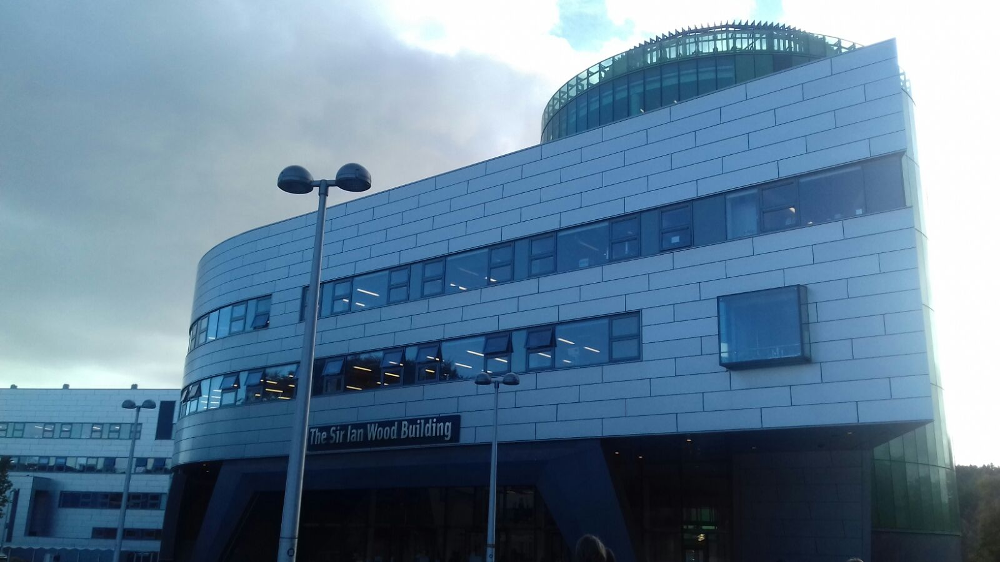

My present.
RGU
In 2017 I got in the scotish uinversity, Robert Gordon, located in Aberdeen, where I started my career in Computer science.
Robert Gordon University provides industry led undergraduate and postgraduate courses leading to highly relevant awards and degrees.Situated on one of the most beautiful campuses in the UK, the university provides facilities that will have a real influence on your capacity to learn.
School of Computing Science and Digital Media
The School of Computing Science and Digital Media courses develop skills and expertise for a wide range of computing technologies and target applications. The School has an excellent reputation for its innovative and practical approaches to teaching and learning. For generations it has produced qualified professionals across a broad spectrum of technical careers with graduates in high profile, international roles. Our applied approach to the subject ensures our graduate employment rate remains one of the best in the UK. We have recently been recognised as the best new university in the UK for computing